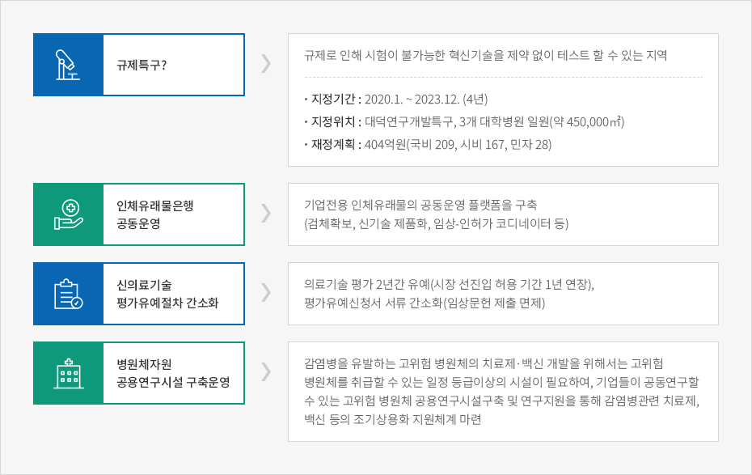
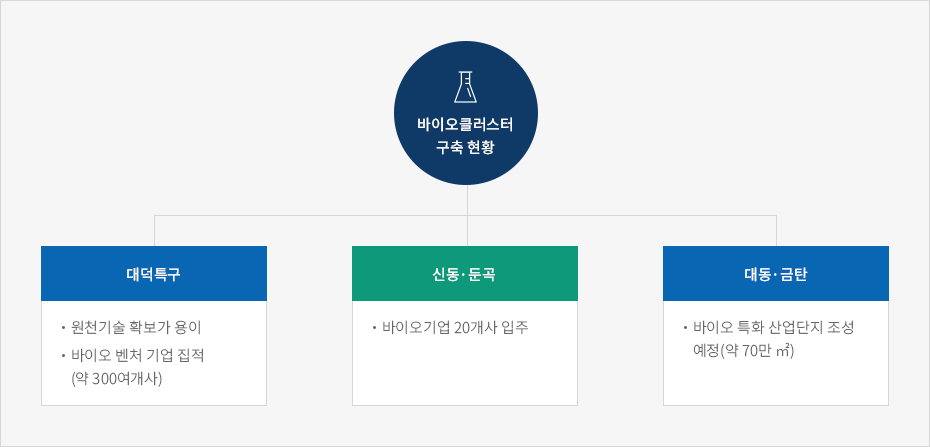

바이오
- Home
- 주요산업
- 바이오
바이오 산업의 최적지 대전
바이오메디컬 분야 규제자유특구 선정


- 규제특구? - 규제로 인해 시험이 불가능한 혁신기술을 제약 없이 테스트 할 수 있는 지역
- 지정기간 : 2020.1. ~ 2023.12. (4년)
- 지정위치 : 대덕연구개발특구, 3개 대학병원 일원(약 450,000㎡)
- 재정계획 : 404억원(국비 209, 시비 167, 민자 28)
- 인체유래물은행 공동운영 - 기업전용 인체유래물의 공동운영 플랫폼을 구축 (검체확보, 신기술 제품화, 임상-인허가 코디네이터 등)
- 신의료기술 평가유예절차 간소화 - 의료기술 평가 2년간 유예(시장 선진입 허용 기간 1년 연장), 평가유예신청서 서류 간소화(임상문헌 제출 면제)
- 병원체자원 공용연구시설 구축운영 - 감염병을 유발하는 고위험 병원체의 치료제·백신 개발을 위해서는 고위험 병원체를 취급할 수 있는 일정 등급이상의 시설이 필요하여, 기업들이 공동연구할 수 있는 고위험 병원체 공용연구시설구축 및 연구지원을 통해 감염병관련 치료제, 백신 등의 조기상용화 지원체계 마련

바이오클러스터 구축

바이오클러스터 구축 현황
- 대덕특구
- 원천기술 확보가 용이
- 바이오 벤처 기업 집적(약 300여개사)
- 신동·둔곡
- 바이오기업 20개사 입주
- 대동·금탄
- 바이오 특화 산업단지 조성 예정(약 70만 ㎡)